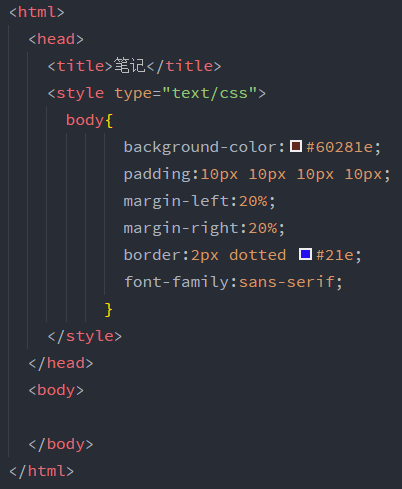

一、HTML与标记
HTML是被创建用来设计网页结构的语言。标记其实就是被尖括号括起来的部分，也是HTML的表现形式，可以说HTML就是一堆用来
包围文本的标记，不过它还包括另外一方面——超文本。HTML的作用在于告诉浏览器页面的结构，这些依赖于浏览器内置的默认规则，
不过你不必受制于这些规则，完全可以利用CSS来增加你自己的样式和格式化规则，确定字体、颜色、大小和页面的很多其它特征。
浏览器会忽略HTML文档中的制表符、回车、大部分空格，事实上，它是根据你的标记来确定在哪里换行或分段。
页面首部包括<head>和</head>以及它们之间的所有内容，页面主体包括<body>和</body>以及它们之间
的所有内容。在编写HTML时，要将页面首部与页面主体分开。
二、元素
设置元素的概念是为了更好的描述管理一个HTML文件。一个元素=一对匹配标记+内容，其中匹配标记即开始标记其对应的结束标记。
三、CSS
CSS——层叠样式表，利用它，可以描述要如何表现你的页面，它提供了一种方法来告诉浏览器页面的元素如何显示。正是有了CSS灵 活的样式规则，才允许设计人员对你的元素做各种各样有趣的处理。
四、style元素
要增加样式，就要用到style元素，它被放在页面的首部里，它具有一个可选的属性type，用来告诉浏览器你在使用的样式，具体如
下这个例子:

图中，type属性告诉浏览器使用CSS，而style元素中的内容即CSS的本来面目。那几行英文确定了整个页面大致的样式是什么。在CSS
规则前，也就是大括号前的那个body的作用是表示这个CSS规则是要应用在HTML里body元素中的，并且事实上，它是有名字的，通常被
称为选择器。
图中的#60281e代表的就是现在页面的颜色，它是CSS指定颜色最常用的一种方式“十六进制码”。
这是一些十六进制码代表的颜色: